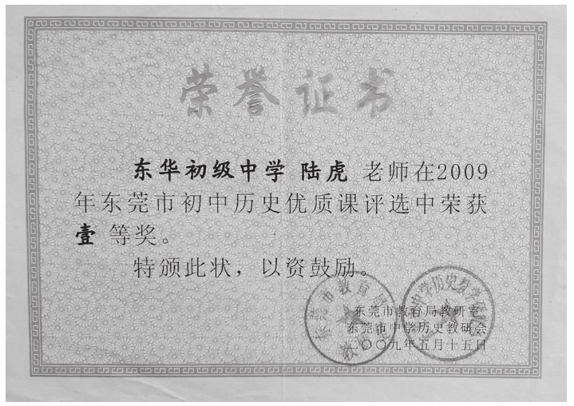
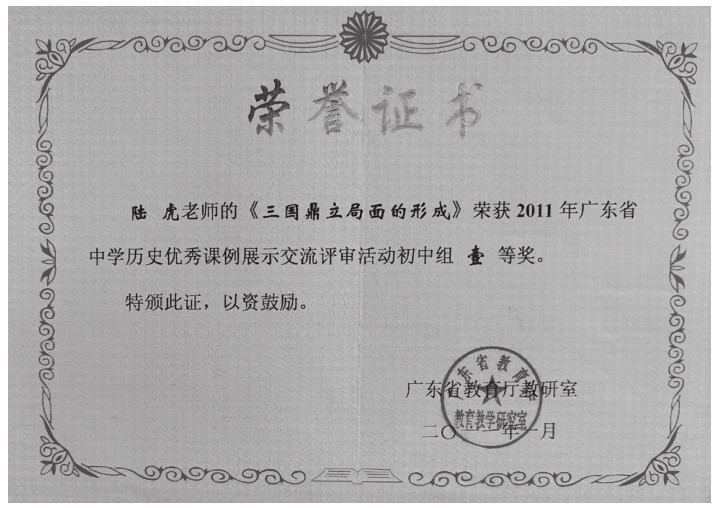
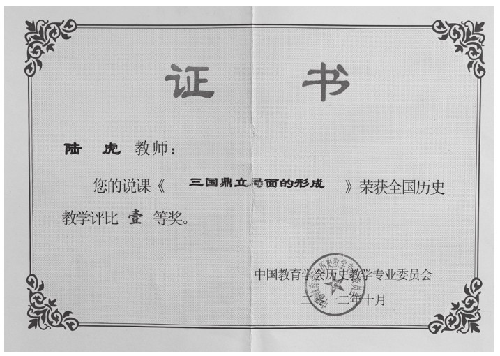
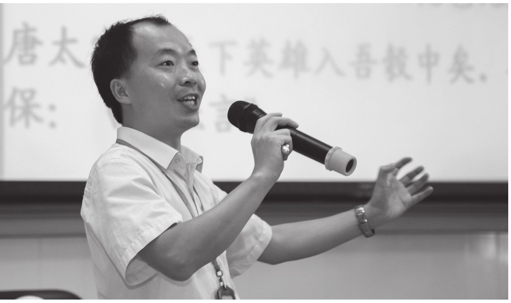

我的成长离不开公开课的打磨。刚入职的时候，所在学校的历史科组就我一个年轻人，所以“集万千宠爱于一身”。无论是科组内部的交流课，还是对外交流的展示课，我都成了当仁不让的出课教师。接下来就是备课、上课、议课、评课、改课、再上课、再议课、再评课、再改课……
最后推出的成品课，其实已经与我第一次备课上课的原生态相去甚远了，可以说，公开课最后所呈现的，就是在我融会贯通了科组集体备课的智慧后的模样。
这种公开展示课算不算是一场“作秀”？我觉得算，“秀”的是个人背后集体的教研能力，“秀”的是教师个人对课的不断打磨和提升效果。也正因为这样的打磨和“作秀”，对我个人教学风格的形成起了巨大的促进作用。基于这样的成长经历，我先后在东莞市级、广东省级、全国级的教学比武中，均取得了一等奖的好成绩，同时个人也不断地在不同层面的教研活动中进行公开课展示，先后受邀到四川、河南、广西、重庆、陕西、浙江、广东、贵州等多个省市进行课堂教学交流。
但是，我最近观摩了一些公开课，却让我有“如鲠在喉”之感，“秀”的痕迹太让人难受了。这种“秀”，不是集体备课智慧的展示，也不是教师个人多次磨课后的不断改进，而是师生之间的“秀”，一堂经过了多次彩排、演练的“表演”课。师生的问答、小组的讨论、学生的举手，甚至包括所谓的“课堂生成”都是提前预设好的。
那么，这样的表演课能给学生和听课的老师带来什么呢？
我认为，推出的公开展示课，可以通过教师私下的打磨和集体的备课，但是师生一起提前演练、编排好的一节“表演课”，就失去了公开课本来的意义，对于学生来讲，更是一次失败的教育。
公开课是一种有目的、有计划、有组织、有策略地面向特定的听课人群做出的正式的公开的课程讲授展示活动。公开课除了学生参加听课外，还有专家、领导及其他老师参加，是老师展示教学水平、交流教学经验的好时机。



作者参加教学比赛获奖
福建师范大学课程中心的余文森教授认为，一节好的公开课，首先要能够体现当前新课程理念，要对新课程的推进起到积极的引领作用和示范作用；其次是要让学生有真真实实的认知收获和基于自身体验的生命感悟，应该是一堂积极有效的课；再次是要真实地、客观地反映当下教学的实际情况和师生真实的教与学的现状，让人感觉到真实、亲近、亲切，可看、可学、可用；最后是要有研究价值，公开课不仅要成为教师自我反思的对象，同时也要成为教学同行或专家共同讨论的素材，从而对促进教学改革和教师专业成长起到实质性的推动作用。
公开课，作为一种教研形式，具有存在和发展的价值，不仅可以为教师的专业成长提供坚实的台阶，同时也能为现阶段的教育教学提供研究的素材。
那么，公开课到底应该公开什么呢？
一、公开教研水平
我觉得，既然是推出来的公开课，还是应该要经过集体教研和磨课准备的。没有打磨和集备的公开课，的确是很原生态，很常态化，但所展示的，只能是一堂普通朴素的课堂，这对于出课老师的成长，以及作为教研素材的作用还是有限的。
二、公开课堂生态
我并不是反对公开课适当的“秀”，“秀”教师的充分准备、“秀”教师的个人素养，这都是必需的。但是，我坚决反对把千姿百态的学生、千变万化的课堂进行提前彩排和演练，公开课变成了一场预设充分的“演出课”，这就失去了课的意义。课堂应该是原生态的，课堂生成应该是不可预设的。
三、公开教学设计
公开课的核心在于“课”，在于作为一个课例研究的价值。听公开课的老师，基本上是以观摩本课的教学设计、教学理念、素养引领等方面为目的。公开课执教者设计的精心与完美，教学过程中真实的课堂动态生成以及教师应对课堂偶发事件的急智能力，才是听课教师最想从公开课上得到启示和收获的地方。
四、公开课堂遗憾
教无止境，指的是无论多么优秀的一节课，总会有值得商榷和改进的地方。这也是教师们不断追求教学艺术的动因所在。没有完美的课堂，只有不断改进的课堂。公开课的价值，其实就是将这种遗憾留给听课老师去揣摩、去修正、去提升，也是带着这种遗憾，公开课的执教老师更加会去进一步提升自己的教学。
五、公开执教心态
如前所说，没有完美的教学，只有遗憾的课堂。况且，一千个读者就有一千个哈姆雷特。公开课的目的，也在于课后广泛地听取听课教师或褒奖、或批评、或鞭策的观点。以谦虚求教、以积极交流的心态面对公开课，将自己最积极的一面、最真实的一面展示给听课教师，这才是公开课执教教师应有的心态。

作者课堂授课风采
当然，在公开课里，一些逐渐暴露的问题，也不得不引起我们的足够重视。
一是对现代技术的盲目崇拜。决定一节课好坏的主要因素，并不是那些多媒体技术武装起来的外在形式，而是这些形式中所蕴含的实质内容。课堂以内容为王，多媒体手段只是为内容服务的，要因地因时因事巧妙地运用。
二是表演式的课堂活动痕迹明显。我们的很多公开课课堂气氛是那么活跃，师生配合是那么默契，甚至随机出现的课堂展示都完美无瑕，这种提前预设好的固定表演，失去了课堂的真实和价值。
听公开课要听什么？“一是听教学设计，二是听课堂生成”。“要听他们的教育教学思想，以及他们灵活的教学机制和课堂应变能力”。“我听公开课会带着自己的想法和问题去听，比如他是如何设计课堂的，他是如何处理课本与课程的，他是怎样设置问题的，学生又有怎么表现，等等。我有一些自己的观察点，从这些点上对自己的启发在哪里”。这是广大听课教师的心声。
学校组织公开课的目的，就是希望通过同事、同行、领导及学科教学专家对公开课的分析与评议，帮助执教教师提高教育教学能力，帮助展示学科提高教研能力；从学校与学科教学来说，希望以公开课为教学案例，以“案”说“教”，以“案”诊“研”，基于此去把脉与提升学校整体的教育教学水平。
在实践的操作过程中，公开课还可以因为年龄段的不同、学段的不同、教学风格的不同、教学水平的差异等，开展更为丰富的公开课型。比如年轻教师的过关课、骨干教师的展示课、卓越教师的邀约课、中年教师和青年教师的同课异构课、不同学段的教师（如初中和高中）在某个课程标准上的异构交流课、不同地区不同地域文化教师之间的跨区域同课异构等等。
总之，课堂的交流和探讨是无止境的，只有回归到课本身，公开课才有价值。